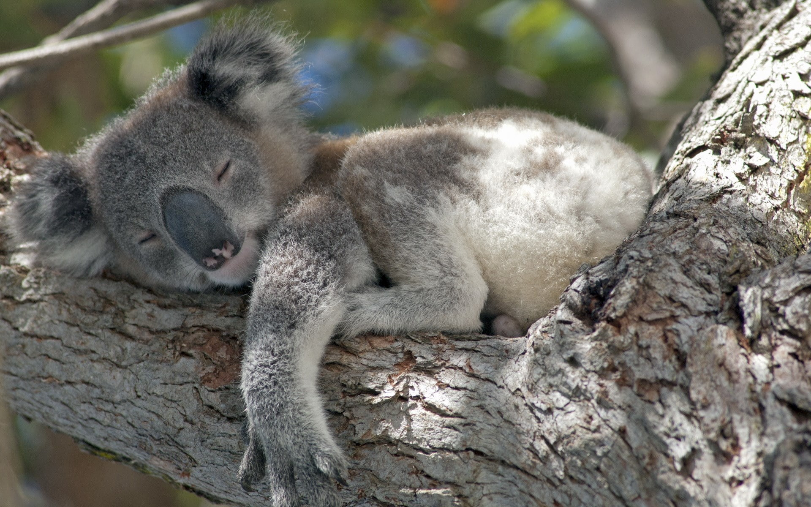

KOALA
- Koalas are herbivores with a highly specialized diet. They primarily feed on eucalyptus leaves, which are toxic to most animals due to their high tannin content. Koalas have unique digestive adaptations, including a slow metabolism and a specialized liver, that allow them to break down these leaves and detoxify their systems.
- Koalas are known for their sluggish and sleepy lifestyle. They sleep for an average of 18-22 hours a day, conserving energy due to their low-calorie diet. Their sedentary nature helps them minimize energy expenditure
- Koalas are territorial animals, and each individual has its own home range within a forested area. Males, in particular, are known to establish and defend territories, and they use vocalizations and scent markings to communicate their presence.
- Koalas are listed as a vulnerable species in Australia, primarily due to habitat loss, wildfires, and disease. Conservation efforts are ongoing to protect their natural habitats and maintain genetic diversity in the population.
- Koalas have specialized hands and feet for climbing and grasping tree branches. They have two opposable thumbs on their front paws, which help them securely grip eucalyptus branches, and their hind feet have rough pads and sharp claws for better traction.
DID YOU KNOW?
WHERE WILL YOU FIND THEM?
You will find Koalas at pen E9, next to the giraffes, on the East side of the zoo.